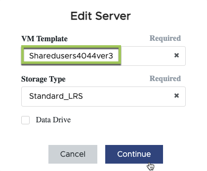

更新和部署 VM 映像
提供者
应用程序交付方法
用户可以访问安装在其用户会话正在运行的会话主机虚拟机（ SHVM ）上的任何应用程序。
系统会根据用户在用户组中的成员资格将其分配到 SHVM 池（ " 主机池 " ）。该主机池中的每个 SHVM 都基于相同的 VM 映像，具有相同的应用程序并在相同的 VM 资源上运行。每次用户连接时，系统都会将其分配给其主机池中当前用户会话最少的 SHVM 。
通过在主机池中的每个 SHVM 中添加或删除应用程序， VDMS-Administrator 可以控制 VDMS-User 可以访问的应用程序。
可以直接在每个 SHVM 上添加（或删除）应用程序，也可以将其添加到单个 VM 映像中，进而将其部署到主机池中的所有 SHVM 。
本文介绍 VM 映像管理。直接在 SHVM 上安装应用程序将在中进行介绍 "本文"。
正在更新 VM 映像
向 SHVM 添加（或删除）应用程序的建议方法是编辑分配给主机池的 VM 映像。自定义并验证 VM 映像后， VDMs 支持团队可以根据请求将其部署到主机池中的所有 SHVM 。
-
在 VDS 门户的部署中导航 " 配置集合 "
-
单击与要更新的主机池关联的配置收集。

-
记下 "Servers" 部分中的 "VM Template" 名称。


-
-
编辑服务器模板，确保源模板为步骤 2.a 中记下的 VM 模板以上。单击 " 继续 "


|
* 请勿编辑这些设置： * 1.类型 = VDI 2 。共享驱动器 = 空 3.最小缓存 = 0 4 。数据驱动器 = 未选中 5.存储类型 = Standard_LRS |
-
现在， VDMs 自动化将在 Azure 中构建一个临时虚拟机，计算机名称为 CWT# 。构建此虚拟机可能需要 25 分钟。此过程完成后，状态将更改为 "Pending"
-
请注意，此虚拟机将一直运行，直到自定义过程完成，因此，在一两天内构建，自定义和验证此虚拟机非常重要。
-
-
临时虚拟机准备就绪后，您可以通过编辑配置收集并单击服务器上的 " 连接 " 来登录到该虚拟机。
-
当系统提示输入凭据时，具有 "PAM 审批者 " 权限的任何 VDMS 管理员都可以生成域管理员凭据。
-
-
验证虚拟机映像后，请联系 VDMS-Support 团队以计划映像刷新。
-
该团队将根据新映像构建新的会话主机。
-
如果需要，请在将新用户重定向到新主机之前，协调时间来测试新主机。
-
-
准备好后，支持团队会将所有新用户会话重定向到新主机。如果没有连接任何用户，我们将关闭旧主机。对于热故障转移，这些旧 VM 将保持已取消分配状态，但这些 VM 将在 7 天后自动清除。
直接更改 SHVM
可以手动直接在 SHVM 上进行更改，也可以通过任何可用的自动化工具进行更改。有关详细信息，请参见 "本文"。
在直接更改主机池中的 SHVM 时，请确保每个 SHVM 的配置方式保持不变，这一点非常重要，否则用户在连接到不同的 SHVM 时可能会遇到不一致的体验。

|
默认情况下，不会备份单个 SHVM ，因为它们通常没有唯一的数据，并且基于标准化的 VM 映像。如果您要直接对 SHVM 进行自定义，请联系支持部门获取应用于主机池中某个 SHVM 的备份策略。 |
SysPrep 故障排除
VDMs" 验证 " 功能使用 Microsoft 的 SysPrep 实用程序。验证失败时，最常见的罪魁祸首是 SysPrep 失败。要对故障进行故障排除，请从位于 CWT# 虚拟机上的 SysPrep 日志文件中启动，路径为 C ： \windows\system32\Sysprep\panther\setupact.log
 请求文档变更
请求文档变更 在 GitHub 上编辑
在 GitHub 上编辑 提供者指南
提供者指南